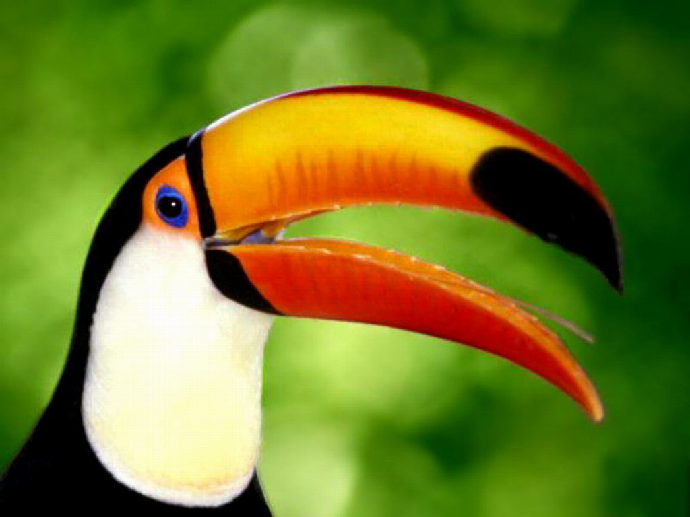
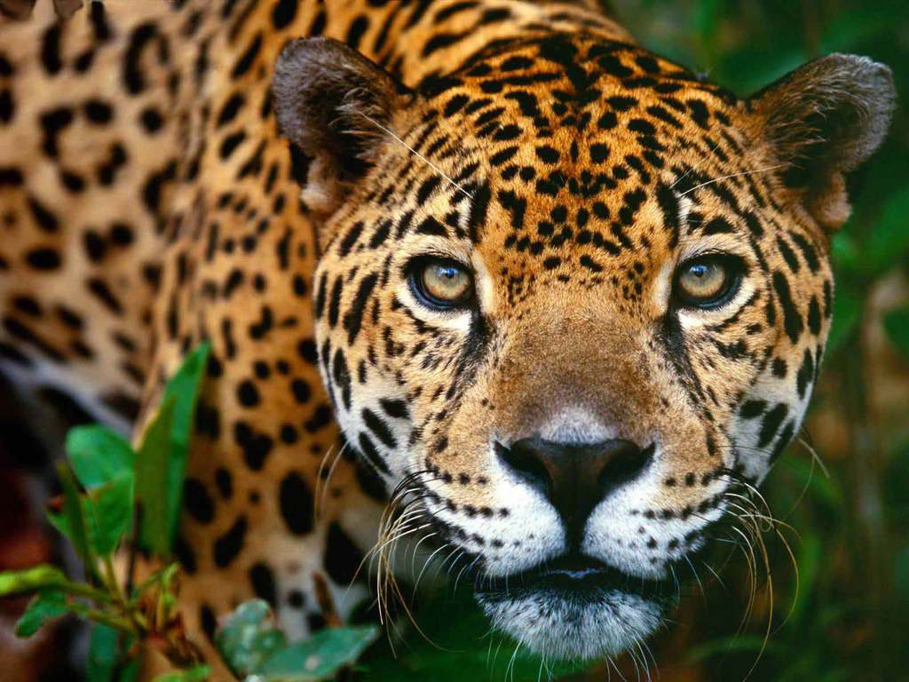
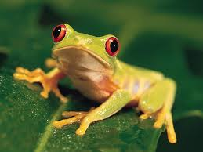
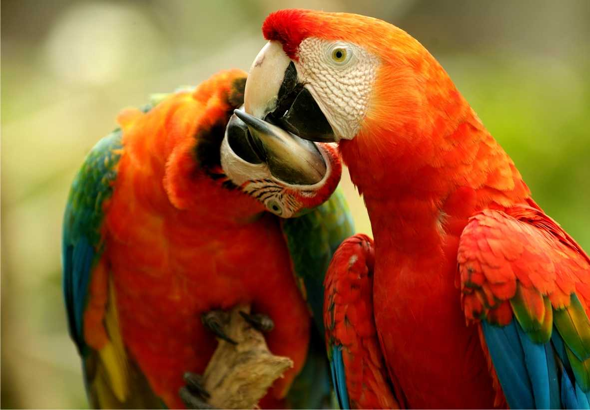

A Amazônia é uma floresta latifoliada úmida que cobre a maior parte da Bacia Amazônica da América do Sul. Esta bacia abrange sete milhões de quilômetros quadrados, dos quais cinco milhões e meio de quilômetros quadrados são cobertos pela floresta tropical. Esta região inclui territórios pertencentes a nove nações. A maioria das florestas está contida dentro do Brasil, com 60 por cento da floresta, seguida pelo Peru com 13 por cento e com partes menores na Colômbia, Venezuela, Equador, Bolívia, Guiana, Suriname e França (Guiana Francesa). Estados ou departamentos de quatro nações vizinhas do Brasil têm o nome de Amazonas por isso.
A Amazônia representa mais da metade das florestas tropicais remanescentes no planeta e compreende a maior biodiversidade em uma floresta tropical no mundo. É um dos seis grandes biomas brasileiros.
No Brasil, para efeitos de governo e economia, a Amazônia é delimitada por uma área chamada "Amazônia Legal" definida a partir da criação da Superintendência do Desenvolvimento da Amazônia (SUDAM), em 1966. É chamado também de Amazônia o bioma que, no Brasil, ocupa 49,29% do território e abrange três das cinco divisões regionais do país (Norte, Nordeste e Centro-Oeste), sendo o maior bioma terrestre do país. Uma área de seis milhões de hectares no centro de sua bacia hidrográfica, incluindo o Parque Nacional do Jaú, foi considerada pela Organização das Nações Unidas para a Educação, a Ciência e a Cultura, em 2000 (com extensão em 2003), Patrimônio da Humanidade.
A Floresta Amazônica foi pré-selecionada em 2008 como candidata a uma das Novas 7 Maravilhas da Natureza pela Fundação Sete maravilhas do mundo moderno. Em fevereiro de 2009, a Amazônia foi classificada em primeiro lugar no Grupo. E, a categoria para as florestas, parques nacionais e reservas naturais.
   